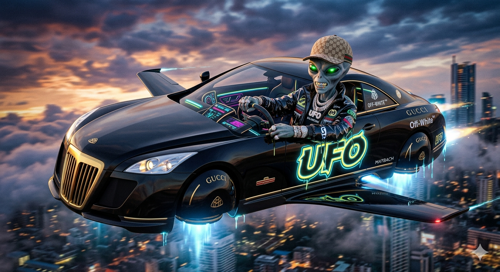

Hola papus pro. Hoy les boy a ensenar imagenes 100% reales no feik que he sacado yo mismo. La primera era un alien chakal que no esta hecho con inteligencia artificial

de hecho, miren el reporte de que es super real
La ufologia estudia a todas las cosas rars que vuelan en el cielo y no estan identificados. No necesariamente son aliens, pero CASI SIEMPRE SON, SE LOS JURO. SON ALIENS O BRAINROTS ABDUCIDOS.
porque nos hacen dano, como ya lo han hecho con nuestros brainrots favoritos. SI quieren ver la evidencia, aqui esa evidencia que estan llevandose a los brainrots (advetrtencia, las imagenes pueden ser demaciado fuertes para algunos, aun mas si t gustan mucho los brainrots). aqui esta el link:
Fuente de las imagenes: Brave Images - ufologia imagenes